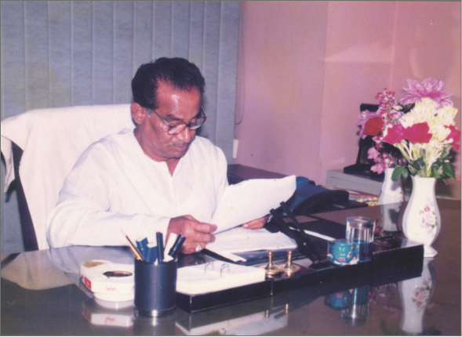
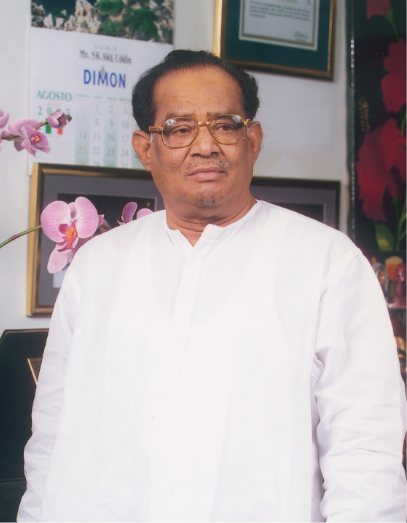

SK. AKIJ UDDIN
(Founder)

An industrialist, entrepreneur and social worker, SK. AKIJ UDDIN was born in the village Madhyadanga under Fultala upazila of Khulna in 1929. His mother’s name is Matina Begum. His father Sheikh Mofijuddin was an ordinary local trader and led a very humble life.
Sheikh Akijuddin was the only child of his parents as his father was also the only son of his grandparents. Akij was admitted into a school, but used to remain away from the school, as he was required to give time in his father’s business. The economic distress of the family led Akij to earn for the family.
The History of Akij Group
(Jute: Golden Fiber)

During the Great Famine of 1942-43, Akij left home and reached calcutta in search of a job or business. Having no relative in Calcutta, Akij made the Shialdah Railway Station his shelter. He used to search some kind of work all through the day and at night would return to the platform of the station to sleep using bricks as pillow under his head. One day he got a cleaning job at Zakariya Hotel and that became the point of his rise in fortune.
Early Life

One day, when he was passing through Ramlochan Street, he observed that some mobile retailers purchased fruits from the street sellers on auction and sell those to different parts of the city. This process attracted him and started this humble business and started living on his own.